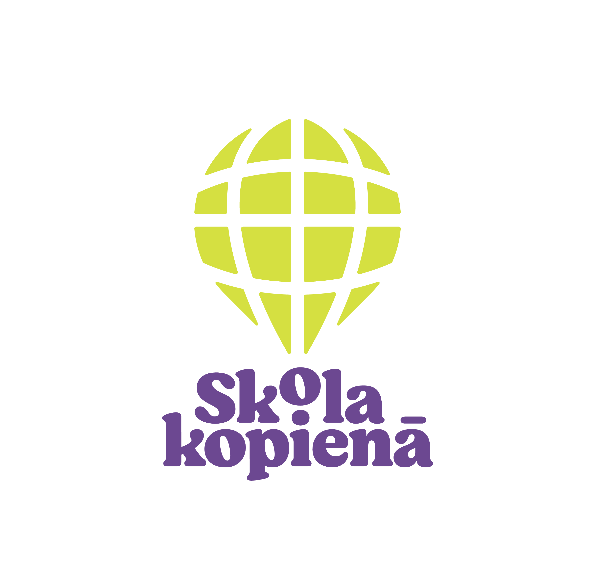
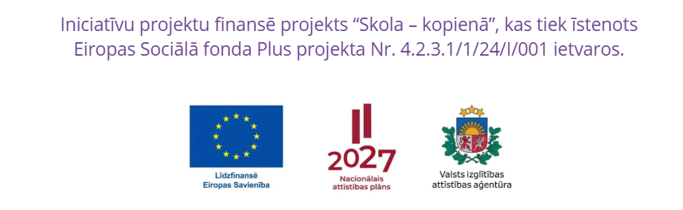

Skola – kopienā
Projekts „JĀdara kopā”
2026. gada septembris – 2027. gada maijs
Kopīgi veidojam drošu, saliedētu un iekļaujošu skolas vidi.

No 2026. gada septembra līdz 2027. gada maijam Aizupes pamatskolā sadarbībā ar nodibinājumu „Junior Achievement Latvijas Ekonomikas skolotāju klubs” un nodibinājumu „JĀdara” tiek īstenots projekts „JĀdara kopā”. Projekts norisinās Eiropas Sociālā fonda Plus projekta „Skola – kopienā” (Nr. 4.2.3.1/1/24/I/001) ietvaros.
Prasmju treniņos un darbnīcās attīstīsim gan ikdienas dzīvē noderīgas prasmes – komunikāciju, sadarbību, empātiju, atbildību, gan veidosim savas individuālās un skolas izaugsmes mērķu kartes. Projekta dalībnieki varēs iepazīt dažādas mācīšanās metodes, gūt praktisku pieredzi un vērtīgas iemaņas savā izaugsmē.
Projekta dalībnieki
Projektā piedalās Aizupes pamatskolas 6.–8. klašu skolēni, skolotāji un skolēnu vecāki, kopīgi veidojot drošu, saliedētu un iekļaujošu skolas vidi.
Galvenās projekta aktivitātes
- Saliedējoša āra aktivitāte „Kopā dabā”.
- Komunikācijas, sadarbības un personīgās līderības prasmju treniņš.
- Individuālie attīstības uzdevumi.
- Mērķu darbnīca „Jauns sākums” un kopienas nākotnes vīzijas un mērķu darbnīca.
- Projekta noslēguma pasākums „Mēs kā komanda”.
Katru mēnesi jauna aktivitāte, tādēļ seko līdzi informācijai!
Jauniešu ieguvumi
- Labāk iepazīs viens otru un skolu ieraudzīs kā vietu, kur atklāt un attīstīt savus talantus.
- Pilnveidos komunikācijas un sadarbības prasmes.
- Attīstīs spēju izvirzīt mērķus un uzņemties atbildību.
- Stiprinās pašapzināšanos un personīgās līderības prasmes.
- Būs motivētāki iesaistīties skolas dzīvē.
- Iegūs pieredzi ideju radīšanā un īstenošanā.
Vecāku un skolotāju ieguvums būs praktiski rīki un metodes personīgās un profesionālās dzīves izaugsmei.
Nodarbību pieeja un vadītāji
Visu projekta aktivitāšu īstenošana balstās uz koučinga pieejas un neformālās izglītības metodēm. Tās vadīs Vineta Saulīte – profesionāls starptautiski sertificēts koučs, bērnu apzinātības skolotāja – un Dainis Zaltans – profesionāls koučs un personālvadības eksperts.
Projekta aktualitātes
Pirmā izaugsmes nodarbība aizvadīta!
Projekts „JĀdara kopā” ir sācies ar aizraujošu un saliedējošu tikšanos mūsu 6., 7. un 8. klašu skolēniem.
Lasīt par pirmo nodarbībuProjekta finansējums
Iniciatīvu projektu finansē projekts „Skola – kopienā”, kas tiek īstenots Eiropas Sociālā fonda Plus projekta Nr. 4.2.3.1/1/24/I/001 ietvaros.
{kind=link}
